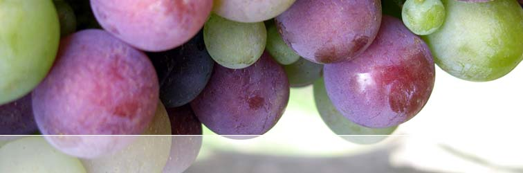
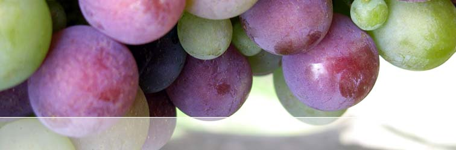

Although production is limited, the 2005 MAX V is now
available to all wine
enthusiasts and advocates of small batch winemaking.
Please register your interest
by contacting info@rocwines.com.au
or visit our ORDERING PAGE
for further details.
Member's Login Page
Proceed to members section – with Behind the scenes, winemakers notes, barrel sample analysis, interviews
and a comprehensive photo gallery.
MERLOT COMPONENT
| Location | Eastern Valley of the Clare | |
| Sub Region | Mintaro | |
| Variety | Merlot | |
| Approx. Yield | 2.5 to 3.5 tonnes per acre | |
| Property Size | 6 acres of Merlot | |
| Age of Vines | Merlot vines were first planted in 1997 | |
| Soil type / Subsoils | The soils are light sandy loam over soft limestone, shale, clay and bluestone. | |
| Aspect | Northerly |
VINEYARD MANAGEMENT
| Trellis System | (VSP) Vertical Shoot position with lifting wires | |
| Vine Spacing | Vines are 1.5-1.75 meters apart and 2 meter row spacing set up for mechanical harvesting | |
| Irrigation | The vineyard is fitted with a drip irrigation system. If necessary in order to avoid root and vine stress irrigation is used at minimal levels. | |
| Hand Pruning | The Merlot is exposed to hand spur pruning with bunch thinning in order to keep vines functioning at their optimum levels to produce quality grapes. Both Mechanical and hand harvesting is undertaken. | |
| Grape Protection | With the aid of the cool air flows throughout the Clare evenings, allowing for optimal air circulation throughout the vineyard, the block is at minimal risk for frost. |
GROWERS STATEMENT
The Gosse block is very well protected and has soil with a greater moisture holding capacity resulting in vines that have better canopy structure, which enables more efficient fruit ripening. The fruit displays excellent dark colour, berries a medium to large, but flavoursome, with intense blueberry fruit characteristics, full flavour and retaining tight acid and richness. The Gosse block Merlot is considered as the best Merlot in the region.
KEY FRUIT CHARACTERISTICS – Merlot
In French the word Merlot means 'young blackbird', probably alluding to the grape's beautiful dark-blue color. Compared to Cabernet Sauvignon, Merlot grapes ripen fairly early and have lower tannins and higher sugar levels. Merlot is notorious for its mid palate dominance and fleshy character. Quality Merlot wines are medium to dark red in color, rich, and fruity, with characteristics of blackcurrant, blackberry, plum, cherry, and mint. When rounded out with oak Merlot takes on textural richness that has overtones of melted chocolate and Turkish delight. In the bordeaux blend Merlot will soften the sometimes harsh edges of Cabernet Sauvignon and aid in lifting the alcohol content, giving it an important role to play in adding textural, supple, balanced and concentrated characters to the final blend.